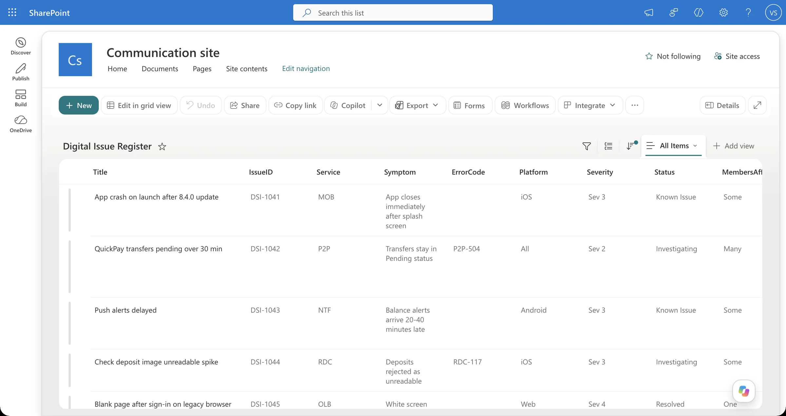
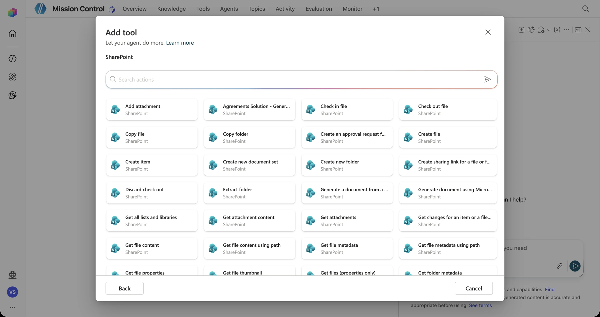
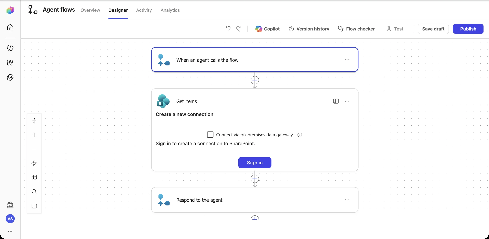
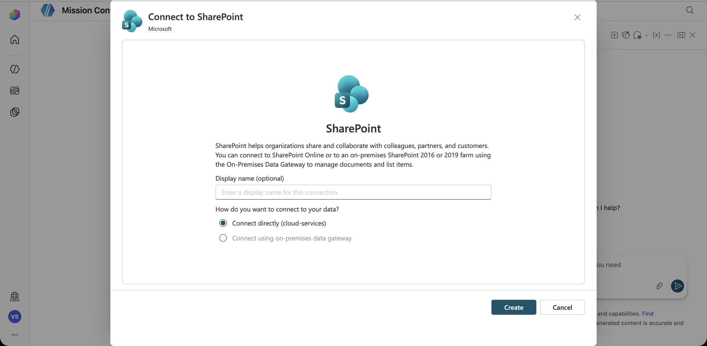
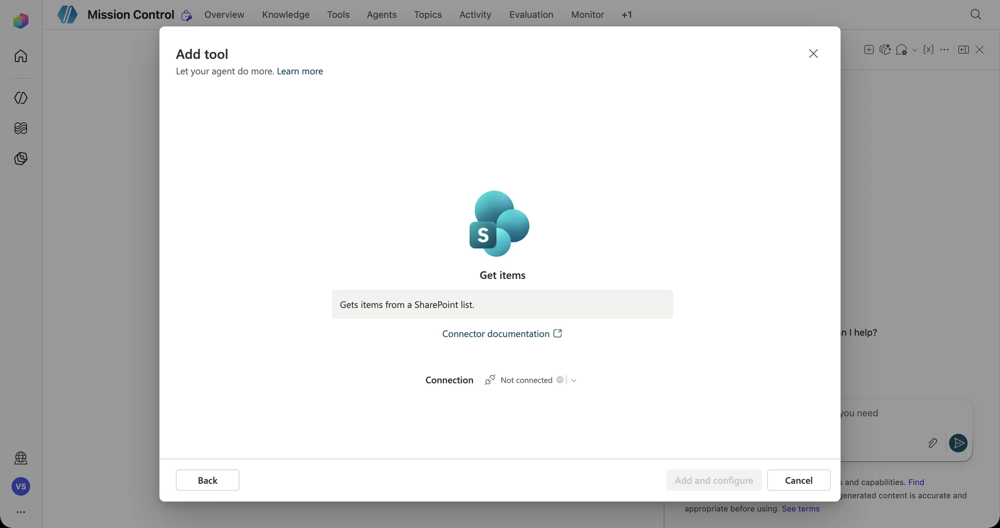

Briefing Discover
Yesterday Mission Control learned to act. Today it learns to act on the real world. That means reading and writing a system of record with an identity, permissions, and consequences.
A connector is a docking port. The connector is the port's design, which says what can attach. The connection is a specific docking, made with a specific identity. Without the right clearance, the hatch stays shut (that's the 403 Surprise).
Connectors, connections, and identity
| Term | Meaning | Why it matters |
|---|---|---|
| Connector | A wrapper around a service's API (SharePoint, Outlook, Teams, ServiceNow…). Standard, premium, or custom. | Admins can allow or block connectors with data policies. |
| Action | One operation that a connector exposes: Get items, Create item, Post message. | Add only the actions you need (least privilege). |
| Connection | An authenticated instance of a connector, tied to an identity. | It determines whose permissions are used. |
| End-user credentials | Each user signs in. The action runs as them. | Respects each user's access, so it's best for personal data. |
| Maker-provided credentials | The action runs as the connection owner or a service account. | Convenient, but everyone inherits that account's access. Scope it tightly. |
The Digital Issue Register (SharePoint list)
Our system of record is a synthetic SharePoint list. It's seeded from digital-issue-register.csv with seven fictional records, DSI-1041 to DSI-1047.
| Issue ID | Title | Service | Severity | Status |
|---|---|---|---|---|
DSI-1041 | App crash on launch after the 8.4.0 update | MOB | Sev 3 | Known Issue |
DSI-1042 | QuickPay transfers pending over 30 min | P2P | Sev 2 | Investigating |
DSI-1043 | Push alerts delayed | NTF | Sev 3 | Known Issue |
DSI-1044 | Spike in unreadable check-deposit images | RDC | Sev 3 | Investigating |
DSI-1045 | Blank page after sign-in on a legacy browser | OLB | Sev 4 | Resolved |
DSI-1046 | SMS passcodes delayed for one carrier | MFA | Sev 2 | Investigating |
DSI-1047 | Bill Pay payee search timeout | BIL | Sev 3 | New |
The integration pattern: look before you leap
Get items
Filter by service + open status
Match?
Count > 0 → known issue
Return existing ID
No new record
Create item
Status = New
Return the real ID
From the system's response
Service eq 'P2P' and Status ne 'Resolved'“Didn't we already log this?”
At 09:12 a Digital analyst reports: “QuickPay transfers are stuck in pending for lots of members.” At 09:14 a second analyst reports: “P2P payments pending forever, many members.” Without a duplicate check, Mission Control happily creates two new records for an issue that's already open as DSI-1042. Now three teams are working the same incident.
Your mission
Make the workflow look up open records for the same service before it creates anything.
Win condition
Both reports return DSI-1042 and the register stays at 7 records.
Stretch goal
Add a comment or bump a “Report count” field on the existing record instead.
Connect to the SharePoint issue register
What you'll build
- A Digital Issue Register SharePoint list seeded with synthetic data
- A Get items lookup that finds open issues for a service
- A duplicate check that links existing issues
- A Create item step that records new issues and returns the real ID
Pre-flight
- Mission 03 workflow (Triage Digital Issue) is working
- A classroom SharePoint site you're allowed to create lists in
- Download digital-issue-register.csv
-
Stand up the Digital Issue Register
On your classroom SharePoint site, select New → List → From CSV, and upload digital-issue-register.csv. Name the list
Digital Issue Register. Keep every column as Single line of text, exceptFirstObserved(Date and time).
Seven synthetic issues, DSI-1041 to DSI-1047. Only OLB is fully Resolved; every other service has an open record, which makes for good duplicate-detection tests. Why SharePoint? It's the system of record most Digital teams already have. The pattern you build here (look up → decide → write → return the real ID) is the same for ServiceNow, Dataverse, Jira, or Azure DevOps. Only the connector changes. -
Create the “Log Digital Issue” workflow
Following the Mission 03 pattern, create a new agent flow with four Text inputs:
Service,Title,Symptom, andSeverity. Between the trigger and Respond to the agent, add SharePoint · Get items. In the search results, the SharePoint group shows Get items, Get item, Create item, and more.
Dozens of actions are available. Least privilege starts here: add only the ones the mission needs (Get items and Create item). -
Sign in: the connection is an identity
The first SharePoint action asks you to create a connection. That connection decides whose permissions the workflow runs with. Select Sign in (or, in the agent's Add tool dialog, Create new connection → Connect directly (cloud-services) → Create).


Field note: “The browser has blocked the connection authentication popup window.” We hit this in our dry run. The consent step opens a pop-up, and Chrome or Edge may block it. Select the blocked-pop-up icon in the address bar, choose Always allow pop-ups from copilotstudio.microsoft.com, and select Sign in again. Also check that you didn't tick Connect via on-premises data gateway by accident. -
Look up open issues for the service
In Get items, pick your Site Address and the Digital Issue Register list. Open Advanced parameters → Filter Query, type / → Insert expression, and paste:
concat('Service eq ''', triggerBody()?['text'], ''' and Status ne ''Resolved''')Set Top Count to
5. The flow now returns only open issues for that service code.OData basicseqmeans equals andnemeans not equals. Text values go in single quotes, and a doubled quote''is how you write one inside an expression. Filtering on the server is faster and safer than pulling the whole list into the flow. -
The Duplicate Incident check
Add a Condition after Get items. Left side, as an expression:
length(outputs('Get_items')?['body/value'])Operator: is greater than. Right value:
0.True: an open issue already exists, so do not create anything. Add Respond to the agent with:
Outcome = DUPLICATE IssueId = first(outputs('Get_items')?['body/value'])?['IssueID'] Message = An open issue already exists for this service. Linked the report to the existing record. -
Record a genuinely new issue
False: add SharePoint · Create item (same site and list). Map the fields, and generate the ID with an expression:
Title = Title (dynamic content) IssueID = concat('DSI-', formatDateTime(utcNow(), 'MMddHHmm')) Service = Service (dynamic content) Symptom = Symptom (dynamic content) Severity = Severity (dynamic content) Status = New FirstObserved = utcNow()Then add Respond to the agent with
Outcome = CREATEDandIssueId = outputs('Create_item')?['body/IssueID']. This is the ID the system returned, not one the model made up. -
Wire it to the agent, and say when to use it
Publish the flow, then add it under Tools → Workflows. Give it a description the orchestrator can act on:
Use this tool AFTER Triage Digital Issue when the Route says to log the issue. It checks the Digital Issue Register for an open issue for the same service and either links the existing Issue ID (Outcome = DUPLICATE) or creates a new record (Outcome = CREATED). Only tell the user an issue was logged if this tool returns an IssueId.Alternative for teams short on time: add SharePoint · Get items straight from Add a tool as an agent tool, and let the orchestrator call it directly. It's quicker to set up, but you give up the deterministic duplicate check.

-
Prove it
Run both prompts in fresh test sessions and check the list after each one:
Some members say Bill Pay payee search times out with BIL-408 on the web. Please log it.Already tracked as DSI-1047 (Bill Pay payee search timeout, status New). No duplicate was created.Many members see error OLB-500 on the Online Banking statements page since this morning. Please log it.Logged a new issue: DSI-12061015, Sev 2 – High. Routed for Web Platform review.
Telemetry check · Mission 06
Connection audit
- For each connector action the builder adds, record: the connector, the action, whose credentials it uses, and what it can read or write.
- Flag any action with more access than the mission needs. Could Get items be limited to one list? Does the agent ever need Delete item?
- Predict what happens if the connection owner loses access to the site. (You'll find out in Mission 09.)
Debrief Mission 06
Every connector call runs as someone. Pick end-user or maker credentials deliberately.
Look up first, then create. That's how you prevent the Duplicate Incident.
Report only what the system returned. That's your verifiable result.